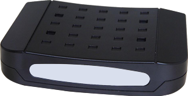

Model : CES-832 / CES-831
THE COAX MDU ENDPOINT, CES-832/831, IS THE BROADBAND ACCESS DEVICE OVER THE EXISTING COAXIAL CABLE.
NO ADDITIONAL NETWORK WIRING IS NECESSARY. CABLE OPERATORS MAY JUST USE THE EXISTING COAX WIRING OF CABLE OPERATORS OR IN THE MDU BUILDING, THEN BE READY TO PROVIDE THE BROADBAND TRIPLE-PLAY SERVICES TO SUBSCRIBERS.
LOW INITIAL DEPLOYMENT COST. THE LOW INITIAL COST CAN EXPAND THE SERVICE TO SMALL SCALE BUILDING WITH HIGHER SPEED THAN CMTS. DUAL SUPPORT OF IPV4 AND IPV6 PROVIDE THE FLEXIBILITY FOR OPERATORS.
WITH HIGH THROUGHPUT AND QOS, IT CAN OPTIMIZE TRIPLE PLAY SERVICES.
AUTO PROVISIONING AND REMOTE MANAGEMENT. IT MINIMIZES THE INSTALLATION AND SUPPORT COST.
THE UNIQUE ENDPOINT SERVICE CONTROL SUPPORTS SERVICE PROVIDERS WITH DIFFERENT SERVICE LEVELS AND SERVICE SCHEMES.